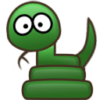

PyLadies Brno
Grafika
Dnes si ukážeme, jak s Pythonem napsat grafickou aplikaci.
Použijeme knihovnu, která není zabudovaná přímo
v Pythonu (podobně jako pytest, který používáme na
testování).
Musíme si ji nejdřív nainstalovat, a na to použijeme
v zapnutém virtualenvu modul
pip –
konkrétně příkaz
python -m pip install pyglet.
U mě vypadá instalace nějak takto:
(venv)$ python -m pip install pyglet
Collecting pyglet
Downloading pyglet-1.2.4-py3-none-any.whl (964kB)
Installing collected packages: pyglet
Successfully installed pyglet-1.2.4
Máš-li nainstalováno, zkus napsat a spustit
následující program. Mělo by se objevit okýnko:
import pyglet
window = pyglet.window.Window()
pyglet.app.run()
print('Hotovo!')
Hotovo? Pojďme si vysvětlit, co se tu vlastně děje.
Interaktivní programy
Podívejme se ještě jednou jak zhruba vypadá hlavní
program pro Piškvorky, který jsme napsaly
na úkolech.
V komentářích je napsané, co která část kódu dělá:
def piskvorky1d():
pole = '-' * 20 # Příprava hry
while True: # Pořád dokola:
pole = tah_hrace(pole) # 1. Zeptej se na tah
if vyhodnot(pole) != '-': # 2. Zpracuj tah
break
print(pole) # 3. Vypiš stav hry
# A znova:
pole = tah_pocitace(pole) # 1. Zeptej se na tah
if vyhodnot(pole) != '-': # 2. Zpracuj tah
break
print(pole) # 3. Vypiš stav hry
V tomhle programu máme dva druhy akcí, které se
pravidelně střídají.
Jakmile taková akce nastane, ať vstup od člověka, nebo
od počítače, tak se zpracuje, a výsledný stav se
oznámí.
Podobnou strukturu „reakcí” jsme použily už dřív,
třeba u hry kámen-nůžky-papír:
- Nějaká příprava
- Dokud program nemá skončit:
- Načti vstup
- Nějak ten vstup vyhodnoť
- Vypiš výstup
A podobně funguje většina programů, které nějakým
způsobem reagují na vstup od uživatele, nebo i na jiné
události.
Webový server čeká na požadavek (angl. request)
o webovou stránku. Když nějaký přijme, zpracuje ho
(např. přečte příslušnou stránku z disku),
a jako výstup pošle odpověď.
Složitější programy reagují na spoustu druhů událostí
(jen na „požadavek” nebo „tah hráče”/„tah počítače”
a co se stane ve „vyhodnocení vstupu” pak závisí
na druhu události.
Webový prohlížeč čeká na kliknutí myši nebo stisk klávesy,
a zachová se podle něj – třeba pošle přes internet
požadavek vzdálenému serveru.
A potom čeká na další akci. Může přijít odpověď od
serveru, a až ta přijde, vykreslí příslušnou stránku
na obrazovku. Nebo může uživatel zmáčknout „STOP”,
a požadavek se zruší.
Textový editor čeká na různé druhy vstupu z klávesnice
či myši, a každý musí nějak zpracovat.
Prostě, podobná struktura programu – smyčka která
načte vstup, zpracuje ho, a vyprodukuje výstup – je
velice užitečná.
Říká se jí smyčka událostí (angl. event loop),
a programy na ní postavené jsou
řízené událostmi (angl. event-driven).
Programátoři jsou líní.
Když je něco užitečné pro více programů, nebývá
zvykem, že to každý programátor v každém programu
opakuje.
Napíše se to jednou a dobře, zabalí se to jako knihovna
a ostatní to pak můžou používat.
Pyglet 🐷
Jedna z takových knihoven je Pyglet.
Obsahuje kromě smyčky událostí taky funkce na
vykreslování 2D grafiky (pomocí knihovny OpenGL),
nebo třeba načítání událostí z klávesnice a myši.
Pojďme se vrátit k prográmku, který ukazuje okno:
import pyglet
window = pyglet.window.Window()
pyglet.app.run()
print('Hotovo!')
Celá smyčka událostí se skrývá ve funkci
pyglet.app.run().
Načtení vstupu (např. z klávesnice) dělá Pyglet sám,
ale jejich zpracování a vykreslení výsledků
už je pro každý program jiné, takže si je budeme muset
naprogramovat samy.
Zatím pro nás Pyglet zpracovává jen dvě události:
zavření okna (tlačítkem „×”, které k okýnkům přidává
operační systém), a stisk klávesy
Esc,
který taky zavře okno.
Po zavření okna skončí smyčka událostí
(funkce pyglet.app.run())
a program může pokračovat.
Text
Klávesa
esc není příliš zajímavá.
Zkusme reagovat i na jiné klávesy.
V Pygletu se na události reaguje tak, že napíšeš
funkci, a pak ji zaregistruješ (angl. register) – řekneš
Pygletu, aby ji vždy v pravý čas zavolal.
Události, která nastane když uživatel píše na klávesnici,
se v Pygletu říká
on_text,
a zpracovává se takto:
import pyglet window = pyglet.window.Window() def zpracuj_text(text): print(text) window.push_handlers(on_text=zpracuj_text) pyglet.app.run()
Co to dělá?
window.push_handlers(on_text=zpracuj_text)
řekne Pygletu, že když uživatel něco napíše do našeho okna,
má Pyglet zavolat funkci zpracuj_text.
Tahle funkce pak dostane jako argument text, který uživatel napsal.
Všimni si, že při registraci nepíšeme
zpracuj_text() se závorkami.
Asi už víš, že
je rozdíl mezi
print(int(8.2)),
což funkci int zavolá
a print pak má k dispozici výsledek,
a print(int),
což vypíše samotnou funkci int.
Tady je to podobné:
Pyglet potřebuje samotnou funkci
zpracuj_text
(protože ji bude sám volat),
nikoli výsledek, který by vrátila (v tomhle případě None,
protože zpracuj_text nic nevrací).
Čas ⏲
Ještě jednu událost zpracujme,
než se přesuneme ke grafice.
Bude to takzvaný tik hodin (angl. clock tick).
To je událost, která nastává pravidelně po nějakém čase.
Funkce pro tiky se registruje takto:
import pyglet window = pyglet.window.Window() def tik(t): print(t) pyglet.clock.schedule_interval(tik, 1/30) def zpracuj_text(text): print(text) window.push_handlers(on_text=zpracuj_text) pyglet.app.run()
Co to dělá?
pyglet.clock.schedule_interval(tik, 30)
řekne Pygletu, že má zavolat funkci tik každou
třicetinu (1/30) vteřiny.
A funkce
tik dostane jeden argument – kolik času
uplynulo od posledního zavolání.
Většinou není přesně 1/30 vteřiny, ale něco víc.
Počítač má i jiné věci na práci, takže se k naší aplikaci
nemusí dostat hned; a taky Pythonu trvá nějakou tu
tisícinu vteřiny než zpracuje zavolání naší funkce.
A proč vlastně třicetina vteřiny?
Je to kvůli tomu, že potom budeme stavět animace.
Když se nám před očima vystřídá 30 obrázků za vteřinu,
mozek si je spojí a vznikne iluze plynulého pohybu.
(Většina filmů používá jen 24 obrázků za vteřinu.)
(Většina filmů používá jen 24 obrázků za vteřinu.)
Vykreslování

Program který vypisuje na terminál spoustu čísel,
není asi zas tak zajímavý.
Téma téhle stránky je ale grafika, tak se začněme od
terminálu odpoutávat. Pojďme kreslit.
Najdi si na internetu nějaký obrázek. Ne moc velký,
tak 3cm, ať je kolem něj v černém okýnku dost místa,
a nejlépe ve formátu PNG. Začni třeba na
téhle stránce.
Ulož si ho do adresáře, odkud spouštíš svůj Pythoní
program. Já mám třeba obrázek hada v souboru
had.png.
Pak obrázek vykresli (použij jméno souboru se svým obrázkem):
import pyglet window = pyglet.window.Window() def tik(t): print(t) pyglet.clock.schedule_interval(tik, 1/30) def zpracuj_text(text): print(text) obrazek = pyglet.image.load('had.png') had = pyglet.sprite.Sprite(obrazek) def vykresli(): window.clear() had.draw() window.push_handlers( on_text=zpracuj_text, on_draw=vykresli, ) pyglet.app.run()
Povedlo se?
Vysvětleme si, co se tady děje:
-
obrazek = pyglet.image.load('had.png')načte ze souboru obrázek -
had = pyglet.sprite.Sprite(obrazek)vytvoří speciální objekt Sprite, který určuje, že tento obrázek chceme „posadit” na určité místo v černém okýnku. Když neuděláme nic dalšího, bude obrázek čekat v levém rohu. -
Funkce
vykresli()se stará vykreslení okna – výstup našeho programu. Volá se vždycky, když je potřeba okno překreslit – například když okno minimalizuješ a pak vrátíš, nebo přesuneš částečně ven z obrazovky, a pak dáš zase zpět. A nebo když budeme něco animovat.Některé operační systémy si pamatují i obsah oken, které nejsou vidět, ale není radno na to spoléhat. -
window.clear()vyčistí okno – natře ho černou barvou, a smaže všechno, co v něm bylo předtím.Na spoustě počítačů tohle není potřeba. Ale je lepší psát programy tak, aby běžely kdekoli. -
had.draw()nakreslí obrázek pomocí předpřipraveného objektuhad. -
window.push_handlers(on_draw=vykresli)zaregistruje funkcivykresli– řekne Pygletu, aby ji volal vždy když je třeba.
Když potřebujeme zaregistrovat funkcí na obsluhu událostí víc, dají se dát funkcipush_handlerstakhle najednou.
Jakékoli kreslení se musí dělat v rámci kreslící funkce,
kterou Pyglet volá z
on_draw.
Jinde funkce jako clear a draw
nebudou fungovat.
Animace
Pojďme si teď s naším Spritem trochu pohrát.
Do funkce
zpracuj_text dej místo printu tento příkaz:
def zpracuj_text(text):
had.x = 150
Náš Sprite má atribut (angl. attribute)
x, který určuje jeho x-ovou souřadnici –
jak moc je vpravo od okraje okna.
Tenhle atribut se dá nastavit, jak budeš chtít – nejčastěji
v reakci na nějakou událost, ale často se nastavuje
i na začátku programu.
Zajímavé je zkusit k
x něco přičíst
při každém tiknutí hodin.
Dokážeš předpovědět, co udělá tenhle kód?
def tik(t):
had.x = had.x + t * 20
Nebojíš-li se matematiky, naimportuj
math
a nech obrázek, ať se pohybuje podle nějaké funkce:
def tik(t):
had.x = had.x + t * 20
had.y = 20 + 20 * math.sin(had.x / 5)
Co se stane, když začneš měnit ta čísla?
Co se stane, když zkusíš podobně nastavovat atribut
rotation?
Zavolej později

Pyglet umí kromě opakovaného „tikání” zavolat funkci
jednorázově, za určitou dobu.
Stáhni si (nebo vytvoř) druhý obrázek. (Já mám druhého
hada, tentokrát s trochu natočenou hlavou a ocasem.)
Až budeš mít obrázek v adresáři s programem,
přidej těsně před
pyglet.app.run()
tenhle kus kódu:
obrazek2 = pyglet.image.load('had2.png')
def zmen(t):
had.image = obrazek2
pyglet.clock.schedule_once(zmen, 1)
Volání
schedule_once(zmen, 1) říká Pygletu,
že za jednu vteřinu má zavolat funkci zmen.
A funkce změní obrázek – stejně jako se předtím měnily
souřadnice.
schedule_once se dá volat i v rámci
obsluhy jiné události. Zkus funkci zmen
nahradit tímhle:
def zmen(t):
had.image = obrazek2
pyglet.clock.schedule_once(zmen_zpatky, 0.2)
def zmen_zpatky(t):
had.image = obrazek
pyglet.clock.schedule_once(zmen, 0.2)
Klik 🐭
Poslední věc, na kterou se tady naučíme reagovat,
je klikání.
Těsně před
window.push_handlers
napiš funkci:
def klik(x, y, tlacitko, mod):
had.x = x
had.y = y
… a pak v
push_handlers ji zaregistruj
pomocí řádku on_mouse_press=klik,.
Co znamená který argument, to zkus zjistit sama.
Nápověda:
- Dokud příkazovou řádku neopustíš úplně, bude fungovat
print! - Kolik má myš tlačítek?
- Jak se projeví Shift+klik?
Pokračování příště
Koukám že kódu už je dnes tak akorát na ukončení lekce:
import math
import pyglet
window = pyglet.window.Window()
def tik(t):
had.x = had.x + t * 20
pyglet.clock.schedule_interval(tik, 1/30)
def zpracuj_text(text):
had.x = 150
had.rotation = had.rotation + 10
obrazek = pyglet.image.load('had.png')
had = pyglet.sprite.Sprite(obrazek, x=10, y=10)
def vykresli():
window.clear()
had.draw()
def klik(x, y, tlacitko, mod):
print(tlacitko, mod)
had.x = x
had.y = y
window.push_handlers(
on_text=zpracuj_text,
on_draw=vykresli,
on_mouse_press=klik,
)
obrazek2 = pyglet.image.load('had2.png')
def zmen(t):
had.image = obrazek2
pyglet.clock.schedule_once(zmen_zpatky, 0.2)
def zmen_zpatky(t):
had.image = obrazek
pyglet.clock.schedule_once(zmen, 0.2)
pyglet.clock.schedule_once(zmen, 0.2)
pyglet.app.run()
Se vstupem z klávesnice a myši, časováním, a vykreslováním
Spritu si vystačíš u leckteré hry nebo grafické aplikace.
Až budeš nějakou dělat, zkus mít:
stav aplikace měj v seznamech a n-ticích (případně
slovnících a třídách, které se naučíme později).
Jedna funkce by měla umět takový stav vykreslit, a
jiné s ním pak budou manipulovat.
Zajímá-li tě toto téma, zkus si zahrát přiloženou hru
Pong, která ukazuje některé další
možnosti Pygletu: psaní textu, kreslení obdélníků,
a obsluhu jednotlivých kláves (např. šipek).
Na první pohled může její kód vypadat složitě,
ale zkus si k němu sednout, a s pomocí komentářů
ho pochopit.
Kdyby komentáře nestačily, jsou k Pongu připravené
i podrobné materiály.
A chceš-li se do Pygletu ponořit hlouběji,
existuje pro něj dokumentace.
Nebude-li ti v ní něco jasné, zeptej se!